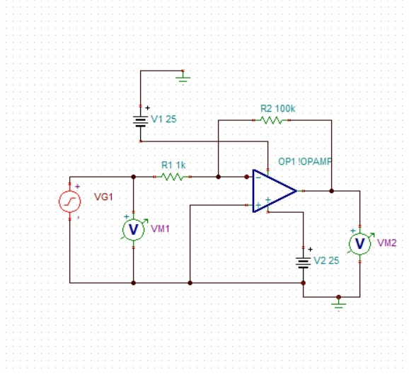

ОТЧЕТ
о выполнении
КРЗ №1
по курсу
"Электроника и Схемотехника"
на тему:
"Демонстрация работы моделей однокаскадных усилителей и основных ТРИГГЕРОВ"
Составили cтуденты: Долгих Тимур
Титов Арсений
Мешков Кирилл
Шаршембиев Данияр
Группа: КФ-21-03
РГУ им. И.М.Губкина факультет: ФКБ ТЭК
Москва 2023
| |
По результатам выполнения Лабораторной работы № 0, показать:
1)'Работу' простейшего усилительного каскада на биполярном транзисотре (определить диапозон линейного усиления, определить коэффициент усиления, снять и построить основные характеристики такого усилителя)
2)'Работу' простейшего усилительного каскада на микросхеме Операционного Усилителя (ОУ) (определить диапозон линейного усиления, определить коэффициент усиления, снять и построить основные характеристики такого усилителя)
По результатам выполнения Лабораторных работ № 1 и № 2 показать:
1)'Работу' простейших ТРИГГЕРОВ:
- асинхронного RS (на логических элементах)
- асинхронного RS (на микросхеме JK)
2)'Работу' D-триггера на логических элементах "И-НЕ"
3)'Работу' D-триггера на микросхеме JK
4)'Работу' T-триггера (из D-триггера на микросхеме JK)
|
Задача 1.1
Воспользуемся компьютерной моделью Tina и соберем простейший усилительный каскад на биполярном транзисторе:

После выполнения Лабораторных работ №0,1,2, а также КРЗ1, мы смогли посмтроить модели усилителей на ОУ, мультивибратор, простейшие Глин, микросхемы Логики, RS,D,T-триггеры и счетчики.
Проверили работу простейшего усилительного каскада на биполярном транзисторе (смог снять его характеристики), так же я снял характеристики и определил коэффициент усиления работы каскада на микросхеме ОУ.
Смогли показать работу асинхронного RS-триггера (на лог. элементах и на микросхеме JK), D-триггера (на лог. элементах "И-НЕ", а также на микросхеме JK), работу T-триггера (из D-триггера на микросхеме JK).
|